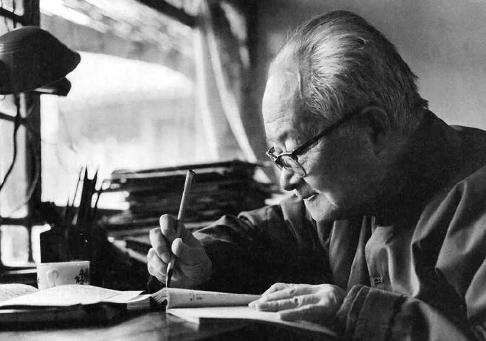
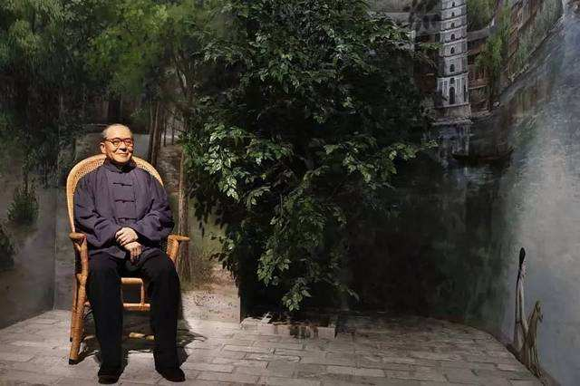
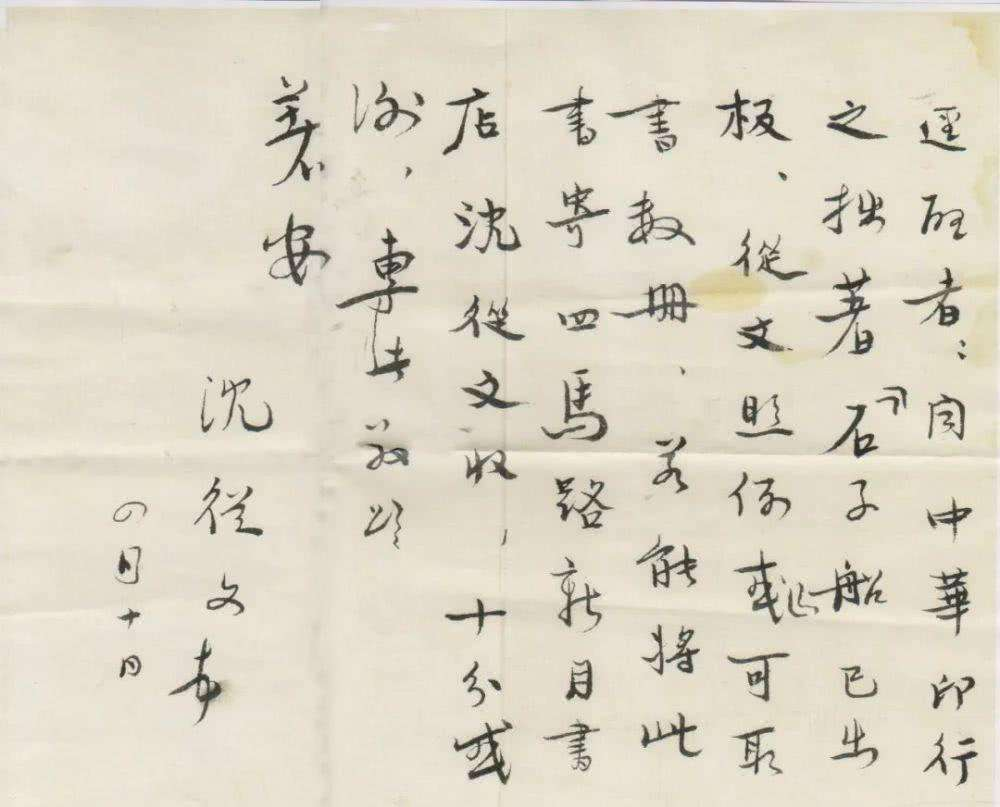

·Introduction
Shen Congwen's photo
Shen Congwen (December 28, 1902 - May 10, 1988), male, formerly known as Shen Yuehuan, nicknamed Maolin, styled Chongwen, pseudonym Xiu Yunyun, Jiachen, Shangguanbi, Xuanruo, etc.
He was born in Fenghuang County, Hunan, and is a famous Chinese Writer and historian.
At the age of 14, he joined the army and wandered the border area of Hunan, Sichuan and Guizhou. In 1924, he began to create literature, and wrote and published novels such as "The Long River" and "Border Town".
From 1931 to 1933, he taught at National Qingdao University. After the outbreak of the Anti-Japanese War, he taught at Southwest Associated University. In 1946, he returned to teach at Peking University.
After the founding of the People's Republic of China, he worked at the Chinese History Museum and the Institute of History of the Chinese Academy of Social Sciences, mainly engaged in ancient Chinese history and cultural relics.
He is the author of "Research on Ancient Chinese Clothing".
He died in Beijing on May 10, 1988, at the age of 86.
·Biography

Shen Congwen was born in Fenghuang County, Hunan Province on December 28, 1902.
In 1917, he participated in the first guerrilla detachment of the Second Army of the Xiangxi Yasukuni Allied Forces, stationed in Chenzhou (Yuanling).
In 1922, Shen Congwen took off his military uniform and came to Beijing. He longed to go to university, but he only received primary education and had no source of income, so he sat in on Peking University.
In 1931, he accompanied Ding Ling to rescue Hu Yepin but failed, and escorted Ding Ling's mother and son back to Hunan.
In the spring of 1938, he went to Kunming and continued to compile and select primary school Chinese textbooks with Yang Zhensheng.
In November, he was appointed as a professor in the Chinese Department of Southwest Associated University.
In August 1949, Shen Congwen's personnel relationship was transferred from Peking University to the History Museum,
and has been engaged in the research of cultural relics for a long time.
In 1960, he published "Dragon and Phoenix Art" and other articles.
In 1969, he went to work at the May 7th Cadre School in Xianning, Hubei.
On the afternoon of May 10, 1988, he suffered a heart attack and died at the age of 86.
·Thoughts

Shen Congwen's writing style tends towards romanticism. He requires the poetic effect of the novel,
which integrates realism, dream, and symbolism. The language style and sentence structure is simple,
the main body is prominentand expressive, with strong richness.
The local color highlights the unique charm and spirit of rural human nature. Shen Congwen's novels with rural themes are typical rural cultural novels.
They not only contrast with the urban "modern civilization" as a whole,
but also focus on the rural people's life as stipulated by the collision of different cultures in the process of Western Hunan's transition to the modern world.
The whole work is full of worries about life and philosophical thinking about life,
just like his real and tenacious life, which teaches and inspires people.
·Works

"Border town" novel
"Long River" novel
"Xianghang Sanji" essay
"Xiangxi" essay
"Tang and Song Bronze Mirrors" Academic Works
·Reference
Shen Congwen - BaiduShen Congwen - WiKipedia